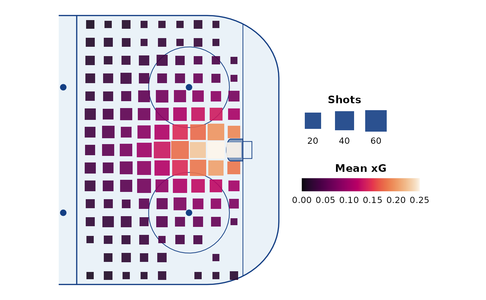

Matched scales for the geom_rink_bin() styles:
scale_fill_rink()Sequential fill for the cell mean, labelled Low / High at the ends by default. Used by every style.
scale_fill_rink_diverging()Diverging fill centred on
0, for maps of differences. Limits are symmetric around0(from the data unless you passlimits), so0sits at the neutral midpoint.scale_size_rink()Event-count size scale for
style = "size". Square sides are set in rink units as a fraction ofbinwidth, so the largest square fills a cell and the smallest stays legible.scale_alpha_rink()Event-count alpha scale for
style = "alpha".
Fill limits are yours to choose: the default NULL uses the range of the data, which
changes from plot to plot. Fix limits (values outside are squished to the ends)
when several maps should share one colour key.
Usage
scale_fill_rink(
name = "Value",
palette = "Viridis",
limits = NULL,
breaks = function(lims) lims,
labels = c("Low", "High"),
...
)
scale_fill_rink_diverging(
name = "Difference",
palette = "Blue-Red 3",
limits = NULL,
breaks = function(lims) c(lims[1], 0, lims[2]),
labels = c("Below", "0", "Above"),
...
)
scale_size_rink(
name = "Count",
binwidth = 2.5,
frac = c(0.4, 1),
square_colour = "#143F84",
...
)
scale_alpha_rink(
name = "Count",
range = c(0.15, 1),
square_colour = "#143F84",
...
)Arguments
- name
Legend title.
- palette
A
grDevices::hcl.colors()palette name (seegrDevices::hcl.pals()), e.g."Viridis","Mako"or"Rocket"for the sequential scale and"Blue-Red 3","Vik"or"Purple-Green"for the diverging one; or a vector of colours.- limits
Fill limits. For
scale_fill_rink_diverging(),NULLderives symmetric limitsc(-a, a)from the data.- breaks, labels
Passed to the underlying scale. The defaults label only the ends of the bar (and
0for the diverging scale); use e.g.breaks = waiver(), labels = waiver()for numeric labels.- ...
Passed to the underlying ggplot2 scale.
- binwidth
The
binwidthgiven togeom_rink_bin(). Square sides range overfrac * binwidth.- frac
Smallest and largest square side, as a fraction of
binwidth. The largest is capped at1(one full cell) so squares never overlap.- square_colour
Fill colour of the legend squares.
- range
Smallest and largest alpha.
Examples
library(ggplot2)
ggplot(shots, aes(x, y, z = xg)) +
annotate_rink(zones = "oz") +
geom_rink_bin(binwidth = 2, scales = FALSE) +
scale_fill_rink(name = "Mean xG", palette = "Rocket", limits = c(0, 0.25),
breaks = waiver(), labels = waiver()) +
scale_size_rink(name = "Shots", binwidth = 2)
